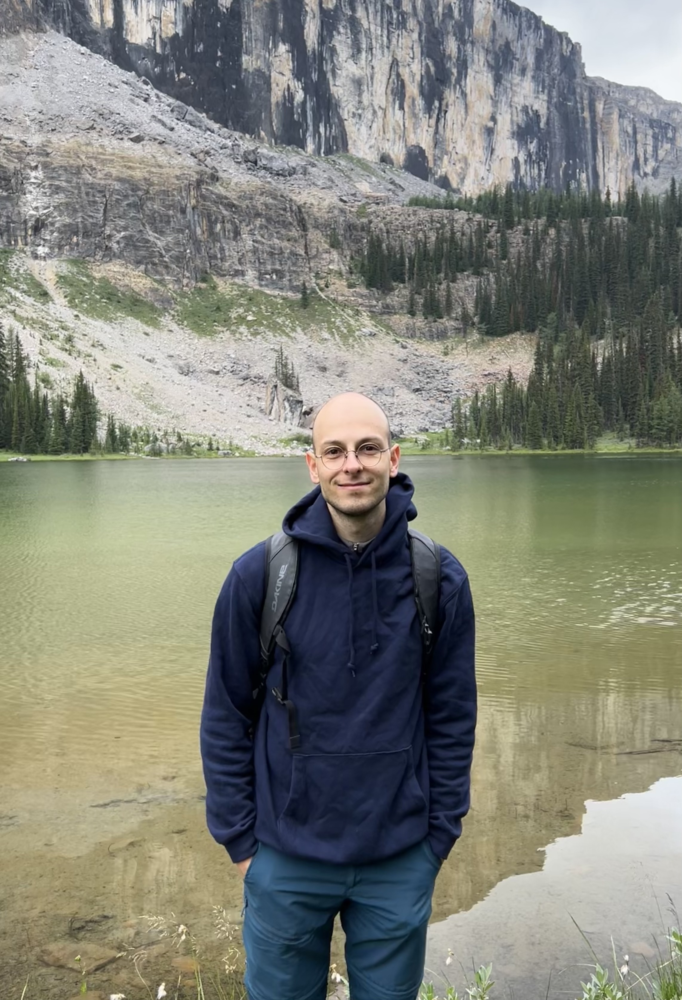

Romain Branchereau
 Since August 2023, I am a postdoc at McGill under the supervision of Henri Darmon. Before that, I was a postdoc at University of Manitoba under the supervision of Siddarth Sankaran. From 2019 to 2022, I was a PhD student at École normale supérieure under the supervision of Nicolas Bergeron and Luis Garcia . I did my bachelor and master at ETH Zürich.
Contact
Mail: branchereauromain [dot] math [at] gmail [dot] com
Address:
Burnside Hall 1248, McGill Department of Mathematics
805 Sherbrooke Street West
Montreal, Quebec H3A 0B9.
Research interests
Number theory, theta lifts, cohomology of locally symmetric spacesPapers
- Eisenstein classes and generating series of modular symbols in SLN
Submitted - An upper bound on the denominator of Eisenstein classes in Bianchi manifolds
Accepted in Annales de l'Institut Fourier - Kudla-Millson lift of toric cycles and restriction of Hilbert modular forms
Mathematische Zeitschrift vol. 309, Article no. 57, 2025 - Maximal operators on hyperbolic triangles (with S. Bronstein and A. Gauvan)
Collectanea Mathematica, vol. 76, no. 1, 2025, pp. 51-63. - The Kudla-Millson form via the Mathai-Quillen formalism
Canadian Journal of Mathematics , vol. 76, no. 5, 2024, pp. 1638-1663 - Diagonal restriction of Eisenstein series and Kudla-Millson theta lift
Forum Mathematicum, vol. 35, no. 5, 2023, pp. 1373-1418. - Diagonal restriction and denominators of some Eisenstein cohomology classes (Phd Thesis, 2022)
Teaching
- Winter 2025 (McGill): Math 346/377 -- Number theory
- Fall 2024 (McGill): Math 133 -- Linear algebra and geometry
- Fall 2023 (McGill): Math 133 -- Linear algebra and geometry
- Summer 2023 (U of M): Math 1210 -- Techniques of Classical and Linear Algebra
- Winter 2023 (U of M): Math 1210 -- Techniques of Classical and Linear Algebra
- Fall 2021 (ENS): Student seminar -- Elliptic curves
- Fall 2020 (ENS): Student seminar -- Lie algebras
- Fall 2019 (ENS): Student seminar -- Arithmetic of quadratic forms
- 2015-2018 (ETHZ): Teaching assistant for calculus 1 and 2